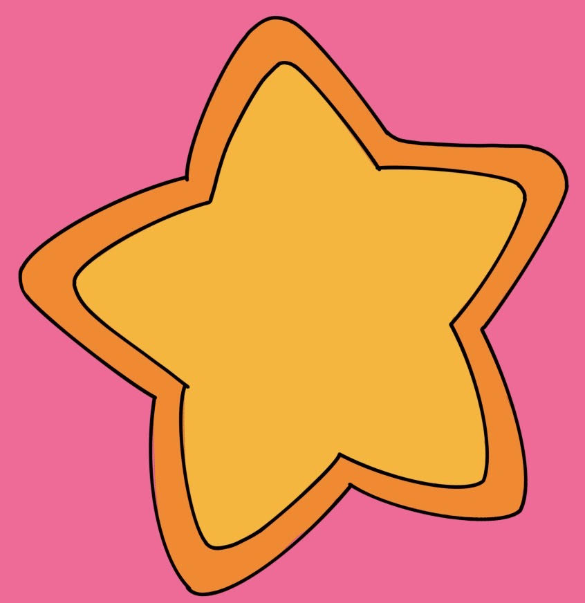
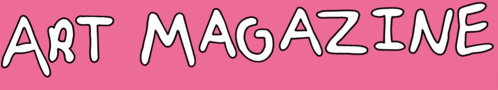
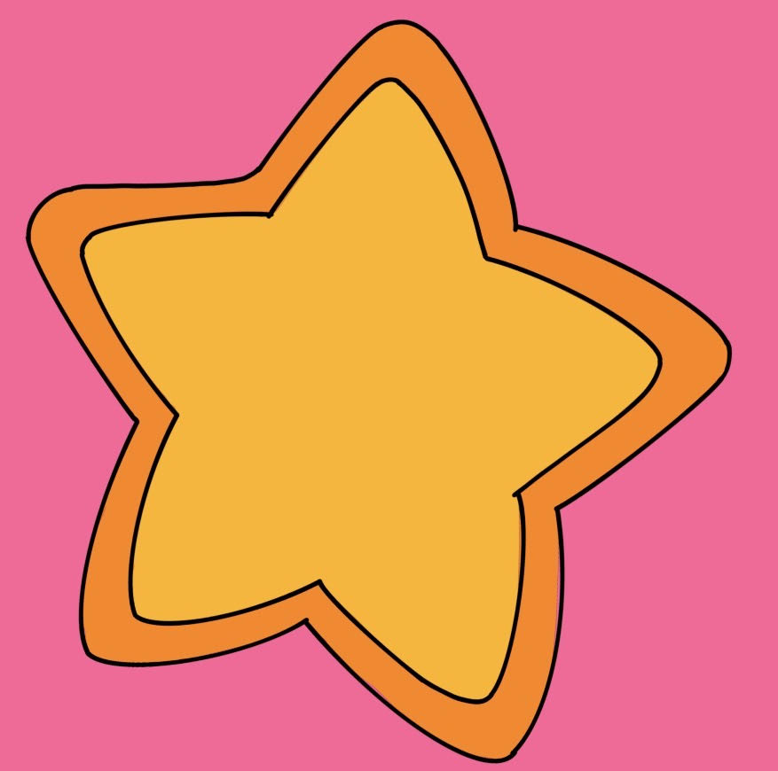

STATIK is a youth-run magazine featuring artwork from young artists, including organizations supporting children in underserved areas. We curate and design each issue to showcase their artwork. All profits from magazine sales are split and donated back to participating organizations.